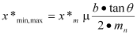

|
|
|


计算基础原理
单个锥形齿轮的几何与齿形基本计算基于 K. Roth [3] 以及圆柱齿轮的已知标准（例如 DIN 3960、DIN 867 等）。
因此，锥形齿轮是采用与圆柱齿轮相同的工艺过程生成的，只是齿廓变位量沿齿宽变化。这因此会改变所有受齿廓变位量影响的参数。
对于螺旋齿锥形齿轮，刀盘不仅由锥角θ倾斜，还由额外的螺旋角β倾斜。在横截面中，这会产生一个左右两侧压力角 α 不同的梯形基准齿廓。这会对齿形产生显著影响，因为这会改变基圆。
齿廓变位量沿齿宽的变化意味着锥形齿轮往往存在齿根根切或齿顶变尖的风险。小端和大端处的齿廓变位量通过

根切极限和最小齿顶面仅在刚输入的数据超过这些值时，才在错误信息中输出。由于左右两侧的尺寸可能不同（对于斜齿轮齿），系统在每种情况下都显示更不利的值。
锥形齿轮副的啮合条件根据 S. J. Tsai 的著作计算：见 [55] 和 [56]。在此值得注意的是，参数被划分为制造参数和工作参数（“制造数据和工作数据”章节）。
Underlying principles of calculation
The basic calculation of the geometry and tooth form for a single beveloid gear is based on K.Roth [3], and on well known standards for cylindrical gears (e.g. DIN 3960, DIN 867, etc.).
Therefore, a beveloid gear is generated using the same process as a cylindrical gear, except that the profile shift changes along the facewidth. And this therefore changes all the parameters which are affected by the profile shift.
For helical toothed beveloids, the cutter is not only tilted by a cone angle θ, but also by an additional helix angle β. In the transverse section, this creates a trapezoidal reference profile with different pressure angles α on the left and the right side. This has a significant effect on the tooth form, because it changes the base circles.
The changes to the profile shift across the facewidth mean that beveloid gears often run the risk of undercut at the root or having teeth with a pointed tip. The profile shift at the toe and heel is calculated by
The undercut limit and minimum topland are only output in the error message if the values are exceeded by the data that has just been entered. As the two sizes on the left and right may be different (in the case of helical gear teeth), the system displays the more unfavorable value in each case.
The beveloid pair's meshing conditions are calculated on the basis of the publications by S. J. Tsai: see [55] and [56]. In this case it is important to note that the parameters are sub-divided into manufacturing and working parameters ("Manufacturing data and working data" section).